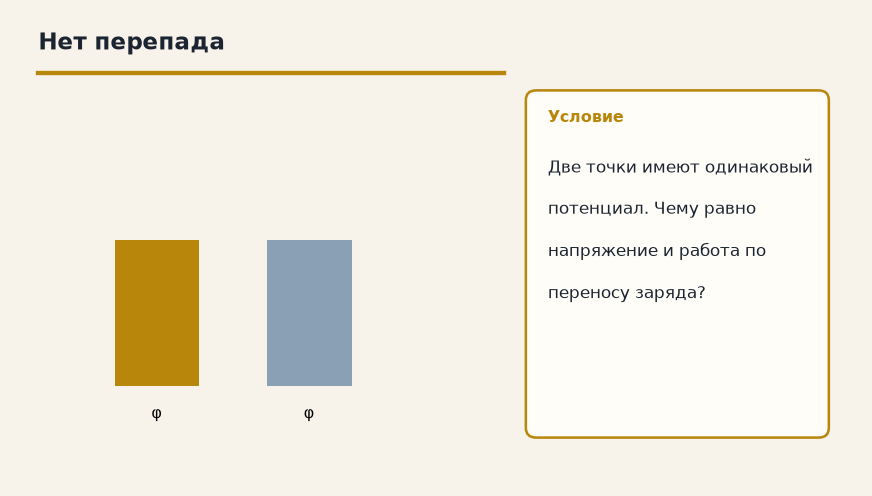

Электрика · Электростатика · 1.4
Потенциал и напряжение
Лист для тетради. Распиши ручкой: дано, перевод в СИ, что найти, ход и ответ. Готового решения здесь нет — его не спрятали, его просто нет. Когда допишешь, покажи лист учителю.
1. Работа поля
Заряд 2 Кл переносят между точками с напряжением 3 В. Какую работу совершает поле?

Дано
В СИ
Найти
Решение
Ответ
2. Нет перепада
Две точки имеют одинаковый потенциал. Чему равно напряжение и работа по переносу заряда?

Дано
В СИ
Найти
Решение
Ответ